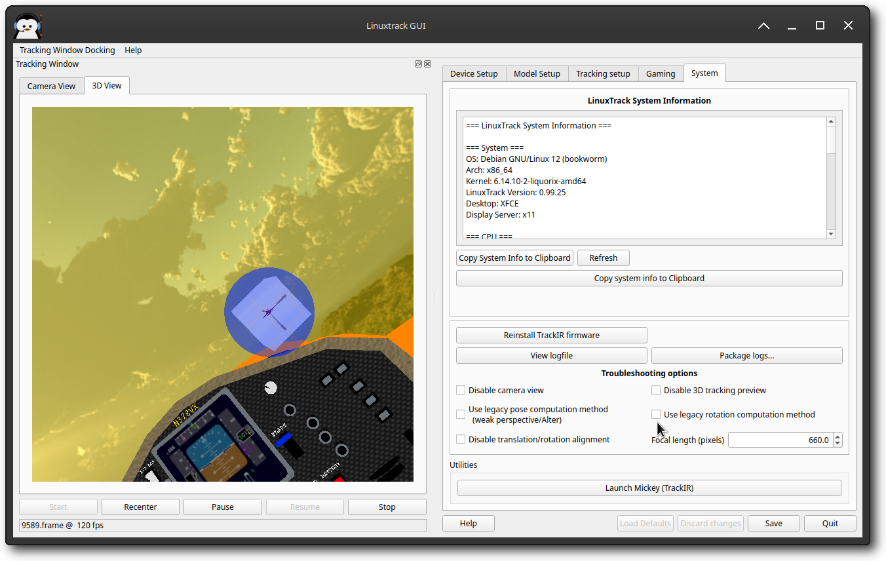

LinuxTrack X-IR System Information
This pane provides comprehensive system information and advanced troubleshooting options for LinuxTrack X-IR.

LinuxTrack System Information
This section displays detailed information about your LinuxTrack X-IR installation and system configuration.
System Information Displayed
- OS: Operating system and version (e.g., Debian GNU/Linux 12)
- Arch: System architecture (x86_64, aarch64, etc.)
- Kernel: Linux kernel version
- LinuxTrack Version: Current version (e.g., 0.99.25)
- Desktop: Desktop environment (XFCE, GNOME, KDE, etc.)
- Display Server: X11 or Wayland
- CPU: Processor information
- etc more information
System Information Actions
- Copy System Info to Clipboard: Copies all system information to clipboard for easy sharing when reporting issues
- Refresh: Updates the system information display with current data
Maintenance Options
These options allow you to reinstall components and access logs for troubleshooting.
Component Management
- Reinstall TrackIR firmware: Reinstalls TrackIR firmware components if they become corrupted
- View logfile: Opens the LinuxTrack log file for debugging purposes
- Package logs: Access package installation logs for troubleshooting build issues
Troubleshooting Options
Advanced options for troubleshooting tracking and performance issues.
Display Options
- Disable camera view: Disables the camera preview window to reduce CPU usage
- Disable 3D tracking preview: Disables the 3D preview window to improve performance
Computation Methods
- Use legacy pose computation method (weak perspective/filter): Switches to older pose computation algorithm if newer method causes issues
- Use legacy rotation computation method: Uses older rotation calculation method for compatibility with certain games or hardware
Alignment Options
- Disable translation/rotation alignment: Disables automatic alignment correction for advanced users
- Focal length (pixels): Adjust camera focal length for better tracking accuracy (default: 660.0)
Utilities
Additional utility functions available in the System tab.
Virtual Mouse
- Launch Mickey (TrackIR): Launches the virtual mouse application that allows head tracking to control mouse cursor
System Requirements
For optimal performance, your system should meet these minimum requirements:
Minimum Requirements
- CPU: Dual-core processor (2.0 GHz or faster recommended)
- RAM: 2 GB RAM (4 GB recommended)
- Graphics: Graphics card with OpenGL support
- USB: USB 2.0 port for TrackIR device
- OS: Linux distribution with Qt5 support
Recommended Specifications
- CPU: Quad-core processor (3.0 GHz or faster)
- RAM: 8 GB RAM
- Graphics: Dedicated graphics card with recent drivers
- USB: USB 3.0 port for better performance
- Camera: High-quality webcam (for webcam-based tracking)
Performance Tips
To optimize LinuxTrack X-IR performance:
General Performance
- Close unnecessary applications to free up system resources
- Use the performance troubleshooting options if experiencing lag
- Ensure your graphics drivers are up to date
Tracking Performance
- Adjust focal length if tracking seems inaccurate
- Use legacy computation methods if experiencing issues with newer algorithms
- Disable preview windows if you don't need them
Log Files
LinuxTrack X-IR creates several log files for debugging:
Main Log Files
- ~/.config/linuxtrack/linuxtrack.log: Main application log
- ~/.config/linuxtrack/tracker.log: Tracker-specific log
- ~/.config/linuxtrack/wine_bridge.log: Wine bridge log
Accessing Logs
Use the "View logfile" button to access the main log file, or navigate to the configuration directory manually.
Configuration Files
LinuxTrack X-IR stores configuration in:
Configuration Locations
- ~/.config/linuxtrack/linuxtrack1.conf: Main configuration file
- ~/.config/linuxtrack/tir_firmware/: TrackIR firmware files
- ~/.config/linuxtrack/profiles/: Saved profiles
Support Information
When reporting issues, please include:
For Bug Reports
- System information (use "Copy System Info to Clipboard")
- LinuxTrack version
- Description of the issue
- Relevant log files
- Steps to reproduce the problem
For Feature Requests
- System information
- Description of the desired feature
- Use case or scenario
- Any relevant screenshots or examples
Keyboard Shortcuts
Common keyboard shortcuts available in LinuxTrack X-IR:
General Shortcuts
- Ctrl+Q: Quit application
- Ctrl+S: Save configuration
- Ctrl+R: Refresh system information
- F1: Show help
- F12: Toggle debug information
Getting Help
For additional support:
Documentation
- Help Menu: Access built-in help system
- Online Wiki: Visit the GitHub/GitLab wiki for comprehensive guides
- Community Forums: Get help from other users
Reporting Issues
Note: When reporting issues, always include your system information by using the "Copy System Info to Clipboard" button and pasting it into your issue report.